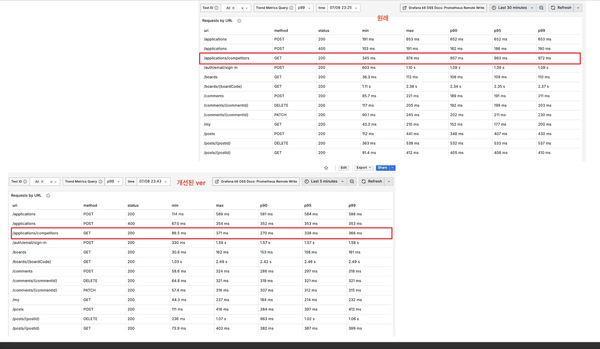

문제: 편리한 참조가 만든 넓은 변경 범위
Solid Connection의 지원 현황 조회는 지원 기간에 트래픽이 집중될 가능성이 큰 API입니다. 기존 Application 도메인은 대학, 학기, 사용자 등 여러 엔티티를 @ManyToOne으로 직접 참조했습니다.
초기에는 자연스러운 모델링이었지만 기능이 늘면서 문제가 선명해졌습니다. 서비스 로직에서 연관 엔티티를 따라가며 불필요한 객체 그래프가 만들어졌고, 조회 방식에 따라 N+1이 발생할 여지도 있었습니다. 한 도메인의 수정이 Entity, Repository, Service, Test로 연쇄 전파돼 기능 하나에 평균 7~9개 파일을 고쳐야 했습니다.
k6 기반 병목 확인
리팩터링 전에 지원 현황 API를 대상으로 k6 부하 테스트를 진행했습니다. 평균값만으로는 일부 느린 요청을 가릴 수 있어 p99를 기준으로 판단했고, 기존 구조의 p99 응답 시간은 972ms였습니다.

프로파일링 결과, 지망별로 반복되는 다중 조회와 연관 객체 탐색이 주요 개선 지점이었습니다. 따라서 단순히 캐시를 추가하기보다 읽기 경로 자체를 줄이는 것이 먼저라고 판단했습니다.
fetch join을 선택하지 않은 이유
fetch join은 당장의 N+1을 줄일 수 있지만 엔티티 직접 참조와 서비스 계층의 연쇄 수정 문제는 그대로 남습니다. 조회 성능과 변경 용이성을 함께 개선하려면 참조 방향부터 다시 정리해야 했습니다.
- 엔티티 간 직접 참조를
Long id참조로 전환 - Repository가 화면 응답에 필요한 식별자를 명시적으로 일괄 조회
- Service는 조회 결과를 지원 가능·지원 완료·삭제 제외 상태로 분류
- 기존 DTO 형식은 유지해 프론트엔드 영향 최소화
조회와 분류 책임 분리
지망별 개별 조회를 하나의 일괄 조회로 합치고, 서비스 계층에서 필요한 상태로 분류했습니다. 엔티티는 다른 엔티티의 생명주기에 덜 묶였고, Repository의 쿼리는 어떤 데이터를 가져오는지 더 명시적으로 바뀌었습니다.
// 개념 예시: 엔티티 자체가 아니라 식별자로 관계를 표현
class Application {
private Long siteUserId;
private Long universityId;
private Long semesterId;
}
// 필요한 데이터를 일괄 조회한 뒤 응답 목적에 맞게 분류
applications.stream()
.filter(applicationPolicy::isVisible)
.collect(groupingBy(Application::getPreference));리팩터링 과정에서는 엔티티 생성자, Repository, Service, Test를 함께 동기화했습니다. 응답 계약을 유지했기 때문에 프론트엔드는 별도 수정 없이 새 구조를 사용할 수 있었습니다.
결과: 응답 시간과 변경 비용 감소
가장 큰 배움은 성능 문제와 설계 문제가 따로 떨어져 있지 않다는 점이었습니다. 객체 참조가 편한 구간과 조회 목적에 맞는 데이터 흐름이 필요한 구간을 구분하자 응답 속도뿐 아니라 변경 범위도 함께 줄었습니다.
NEXT POST20분 걸리던 부하 테스트 환경 전환 자동화 →